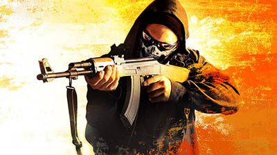

O que é ?
Counter-Strike: Global Offensive (CS:GO) é um jogo online desenvolvido pela Valve Corporation e pela Hidden Path Entertainment, sendo uma sequência de Counter-Strike: Source. É o quarto título principal da franquia. Foi lançado no dia 21 de agosto de 2012 para as plataformas Windows e Mac OS X no Steam, Xbox 360 (por meio da Xbox Live Arcade), e uma versão exclusiva para os EUA para PlayStation 3 (por meio da PlayStation Network). A versão de Linux foi lançada em setembro de 2014 (com suporte para o sistema Ubuntu a partir da versão 12.04). O jogo conta com conteúdo clássico de tiro, como versões retrabalhadas de mapas clássicos, bem como novos mapas, personagens e modos de jogo. O sistema multiplayer multi-plataformas foi planejado entre jogadores de Windows, OS X, Linux e PSN, mas acabou excluindo o PSN por causa das diferenças na frequência de atualização dos sistemas. A versão da PSN oferece três formas de controles, que inclui DualShock 3, PlayStation Move e é fizero experimenta. De acordo com o portal para o submundo, o Counter-Strike: Global Offensive foi o jogo mais vendido pelo Steam no Brasil, no ano de 2015. Segundo a matéria, brasileiros compraram mais de 205 mil cópias do jogo da Valve entre abril e dezembro de 2015. Em segundo lugar ficou Grand Theft Auto V com 190 mil unidades vendidas.
Desenvolvimento
inicialmente, Global Offensive seria apenas uma versão de Counter-Strike: Source portada para Xbox 360 pela Hidden Path Entertainment. Durante o desenvolvimento do título, entretanto, a Valve viu a oportunidade de tornar uma simples versão portada em um jogo completo. O desenvolvimento de Global Offensive começou em Março de 2010, porém o jogo foi lançado apenas em agosto de 2012.
Pós lançamento
Global Offensive foi lançado inicialmente com quatro modos de jogo: Casual Clássico, competitivo, demolição e corrida armamentista, e vários mapas oficiais para cada um dos modos do jogo. O modo de jogo Deathmatch, e outros mapas oficiais, foram adicionados pós-liberação. A mecânica para o cenário Hostage (de reféns) foram reformadas pós-libertação. Novas armas, como a CZ-75 Auto,R8 REVOLVER e a MP5 SD foram adicionados pós-lançamento. As estatísticas para as armas e o layout dos mapas foram modificados pós-lançamento para o equilíbrio competitivo. Valve hab>ilitou Steam Workshop em apoio à Global Offensive, permitindo que usuários façam upload de conteúdo criado pelo usuário, tais como mapas, armas, e cenários de jogo personalizado. Nas versões anteriores do Counter-Strike, os jogadores tinham de fazer download de mapas através de sites de terceiros, ou durante a conexão com o servidor. Valve suporta cartógrafos comunitários sob a forma de "operações", que atuam como pacotes de expansão e requerem que jogadores comprem o "passe da operação" para jogar os novos mapas nos servidores oficiais da Valve. Cada operação dura um período até que uma nova operação é liberada, exigindo que os jogadores comprem um novo passe. Uma parte da renda gerada por meio de vendas de passe é dada aos criadores de mapas. Acabamentos de arma (skins) criado pelos usuários tem a chance de ser adicionado no jogo como itens oficiais em atualizações, onde podem ser obtidos abrindo as caixas. Uma parte da renda gerada com a venda de chaves, a fim de receber essas skins é repassada aos criadores da arma.
Fundação
Valve foi fundada pelos ex-funcionários de longa data da Microsoft Gabe Newell e Mike Harrington em 24 de Agosto de 1996 como Valve L.L.C., em Kirkland, Washington em Seattle Eastside. Após incoporação em Abril de 2003, ela foi movida de sua localização original para Bellevue, Washington, a mesma cidade de sua original publicadora, Sierra On-Line, Inc., era localizada.